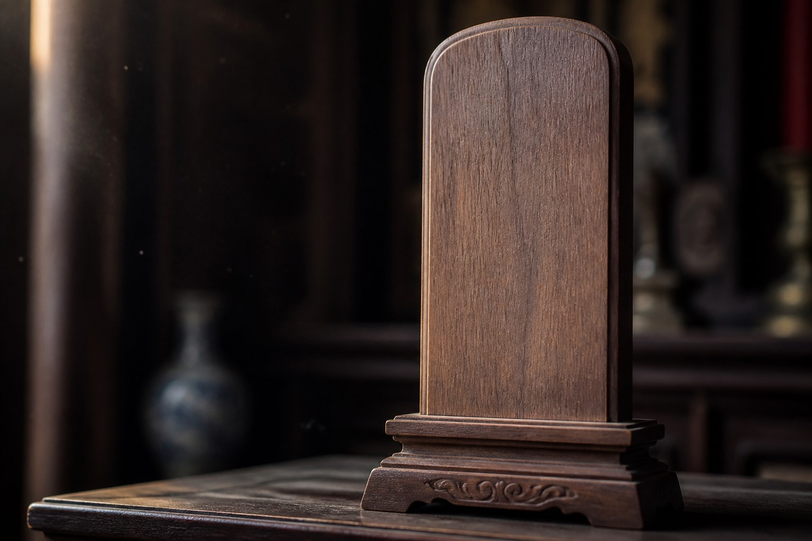

Special collections, night reading copies
This room only provides the holding photocopy of the Zhu Xi household-rite shenzhu article, plus an old Lijiang lisheng extract. Original paper does not leave. Night opening to the records room is an old agreement between the house and the library. It is not for the public.
The copies can show how an old hand wrote a tablet name, that dianzhu is required before a wooden tablet is complete, and how a paired spouse is noted. They cannot approve moving a tablet tonight, and they cannot complete a tablet for anyone. Contemporary law does not treat a tablet as a disposition. This room does not play courtroom either.
| Copy | What is extracted |
|---|---|
| shenzhu article | late father / late mother, tablet name, paper and wood |
| dianzhu extract | cinnabar; a paper tablet is not yet complete |
| paired-spouse extract | living, divorced, double death |
Night readers write a staff id in the register. If Wei Tang comes, write Wei-0821. Cen Shulan does not lecture. She points at the list. Ask “how should row 3 read tonight” and she sends the person back to records. Special collections does not fill cards.
One empty wooden-tablet photo. No words. So nobody treats the picture as an already completed tablet.holding
